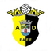

| Rank | Move | Club | Form | Last Result | Elo | Change |
|---|---|---|---|---|---|---|
| 14▲2 | ▲2 |  Primeira Liga | WWWWW | W GIL Vicente 4-1 | 1605.0+3.7 | +3.7 |
| 22▼2 | ▼2 |  Primeira Liga | WLLWW | W Maritimo 2-1 | 1558.8+1.2 | +1.2 |
| 27▲1 | ▲1 |  Primeira Liga | WWLLW | W Academico Viseu 1-0 | 1538.2+2.1 | +2.1 |
| 96▼18 | ▼18 | DLWLL | D Famalicao 2-2 | 1351.7-4.6 | -4.6 | |
| 148▲21 | ▲21 | Primeira Liga | DWLLW | D SC Braga 2-2 | 1284.7+4.6 | +4.6 |
| 154▲9 | ▲9 | Primeira Liga | WWWDL | W Alverca 1-0 | 1279.6+12.6 | +12.6 |
| 184▼4 | ▼4 |  Primeira Liga | LLWDW | L Benfica 1-2 | 1245.0-4.0 | -4.0 |
| 188▼13 | ▼13 |  Primeira Liga | LLWWW | L Benfica 1-4 | 1244.1-3.7 | -3.7 |
| 220▲22 | ▲22 | Primeira Liga | WWLDL | W Maritimo 5-0 | 1217.5+15.3 | +15.3 |
| 250▼24 | ▼24 |  Primeira Liga | LLWWW | L Arouca 0-1 | 1198.1-12.6 | -12.6 |
| 267▲28 | ▲28 | Primeira Liga | WLLDW | W Estoril 3-1 | 1188.0+20.1 | +20.1 |
| 279▲31 | ▲31 | Primeira Liga | LWLWW | L FC Porto 0-1 | 1179.8-2.1 | -2.1 |
| 361▲57 | ▲57 | Primeira Liga | WWLWL | W Estrela 2-0 | 1137.8+22.8 | +22.8 |
| 362▲20 | ▲20 | Segunda Liga | WWWWD | W Tondela 2-1 | 1137.7+10.9 | +10.9 |
| 377▼30 | ▼30 | Segunda Liga | LWWWW | L AVS 1-2 | 1131.1-10.9 | -10.9 |
| 379▼56 | ▼56 | Primeira Liga | LWWLD | L Famalicao 0-4 | 1130.4-20.0 | -20.0 |
| 418▼52 | ▼52 | Primeira Liga | LDLLL | L Moreirense 1-3 | 1114.5-20.1 | -20.1 |
| 428▼61 | ▼61 |  Primeira Liga | LWLLD | L Casa Pia 0-2 | 1110.4-22.8 | -22.8 |
| 431▲61 | ▲61 | Primeira Liga | WLLLL | W SC Braga 1-0 | 1109.2+19.7 | +19.7 |
| 446▲28 | ▲28 | Segunda Liga | WLLLW | W Amarante 1-0 | 1104.1+6.6 | +6.6 |
| 454▼51 | ▼51 | Primeira Liga | LLWLD | L Sporting CP 1-2 | 1102.8-1.2 | -1.2 |
| 552▼6 | ▼6 | Segunda Liga | DWDWW | D Felgueiras 1932 2-2 | 1074.6+0.1 | +0.1 |
| 591▼109 | ▼109 | Segunda Liga | LWWWW | L Penafiel 1-4 | 1063.7-29.1 | -29.1 |
| 599▲110 | ▲110 | Segunda Liga | WLLWW | W Farense 4-1 | 1061.9+29.1 | +29.1 |
| 614▲61 | ▲61 | Segunda Liga | WWWWL | W Leixoes 4-0 | 1058.9+18.8 | +18.8 |
| 627▼16 | ▼16 |  Segunda Liga | DWLWD | D FC Porto B 1-1 | 1055.5-0.3 | -0.3 |
| 641▼43 | ▼43 | Liga 3 | DLDWW | D SC Covilha 1-1 | 1051.2-9.4 | -9.4 |
| 669▼6 | ▼6 |  Segunda Liga | DWWLL | D Feirense 0-0 | 1040.3-2.5 | -2.5 |
| 717▲81 | ▲81 | Segunda Liga | WWLWW | W Portimonense 3-0 | 1026.4+17.0 | +17.0 |
| 754▼7 | ▼7 |  Segunda Liga | DWLWL | D Lusitânia Lourosa 2-2 | 1019.8-0.1 | -0.1 |
| 779▼48 | ▼48 | Segunda Liga | LLLWD | L Chaves 1-2 | 1013.8-11.7 | -11.7 |
| 794▼70 | ▼70 | Segunda Liga | LLLWD | L Academica 0-4 | 1010.8-18.8 | -18.8 |
| 841▲53 | ▲53 |  Segunda Liga | WWDLW | W Vizela 2-1 | 1000.2+11.7 | +11.7 |
| 881▲6 | ▲6 | Segunda Liga | DWDLL | D União de Leiria 1-1 | 990.2+0.3 | +0.3 |
| 944▲53 | ▲53 | WWDWW | W Trofense 4-0 | 975.1+9.9 | +9.9 | |
| 962▼72 | ▼72 | Segunda Liga | LWWWL | L Sporting CP B 0-3 | 972.2-17.0 | -17.0 |
| 966▼24 | ▼24 | Segunda Liga | LLLWD | L Torreense 0-1 | 971.1-6.6 | -6.6 |
| 968▼8 | ▼8 |  Liga 3 | DWWWL | D Louletano 2-2 | 970.9-3.1 | -3.1 |
| 1132▲4 | ▲4 |  Liga 3 | DLDWL | D AD Marco 09 0-0 | 934.8-1.0 | -1.0 |
| 1138▼13 | ▼13 | Liga 3 | DWDDL | D Caldas 3-3 | 933.6-3.5 | -3.5 |
| 1254▲10 | ▲10 | Segunda Liga | DLLLL | D Benfica B 0-0 | 914.9+2.5 | +2.5 |
| 1332▲64 | ▲64 |  Liga 3 | WWDDL | W Leça 1-0 | 902.1+9.9 | +9.9 |
| 1339▼10 | ▼10 | Liga 3 | DDLWL | D Lusitano Évora 1911 2-2 | 901.1-0.9 | -0.9 |
| 1560▲193 | ▲193 | Liga 3 | WWDDD | W Vianense 3-1 | 870.3+24.0 | +24.0 |
| 1578▲188 | ▲188 |  Liga 3 | WLLDD | W Varzim 4-2 | 868.0+23.8 | +23.8 |
| 1581▼78 | ▼78 | Liga 3 | LWWWW | L Pacos Ferreira 0-1 | 867.5-9.9 | -9.9 |
| 1605▼189 | ▼189 | Liga 3 | LWDWW | L São João Ver 1-3 | 864.3-24.0 | -24.0 |
| 1626▲64 | ▲64 | Liga 3 | WLWWW | W Vitória de Sernache 2-1 | 862.3+9.4 | +9.4 |
| 1666▼199 | ▼199 | LLLLL | L Guimaraes B 2-4 | 857.5-23.8 | -23.8 | |
| 1702▲14 | ▲14 | Liga 3 | DLLWW | D Fafe 0-0 | 851.3+1.0 | +1.0 |
| 1876▲30 | ▲30 | Liga 3 | DLLWL | D Atlético CP 2-2 | 829.1+3.1 | +3.1 |
| 1953▲4 | ▲4 | Liga 3 | DLDLL | D Oliveirense 2-2 | 819.5+0.9 | +0.9 |
| 1990▼64 | ▼64 | Liga 3 | LWWWL | L União Santarém 1-2 | 813.4-9.4 | -9.4 |
| 2177▲88 | ▲88 | Liga 3 | DDDLD | D CF Os Belenenses 1-1 | 788.6+9.4 | +9.4 |
| 2206▼67 | ▼67 | Liga 3 | LDLDL | L Paredes 0-4 | 785.4-9.9 | -9.9 |
| 2240▲38 | ▲38 | Liga 3 | DLWWL | D Mafra 3-3 | 781.0+3.5 | +3.5 |